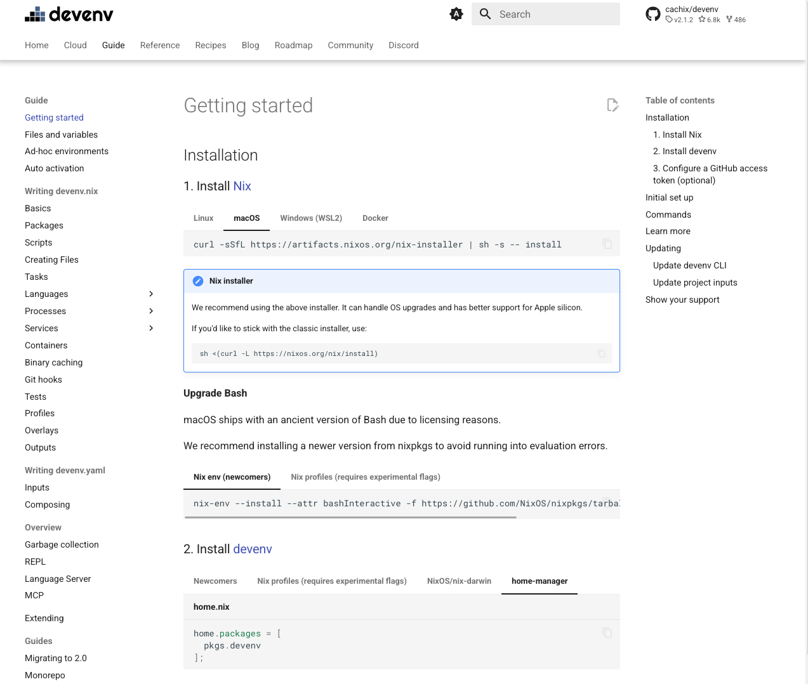

May, 2026
One thing that has put me off of Nix is the sheer complexity. Last year I didn't spend much time using it even though I still had devoted some time in learning it. However, the effort required to reach for it on a small project or to convert one of my longer running projects over was too great. So I actually didn't spend much time in the land of Nix. I had some time this month, so I decided to dig back in and try to connect some of the concepts and develop a better understanding of it.
My end goal was to use Nix to build a dev shell and reach the promises of a immutable, reproducible, and determinant development environment to share with colleagues and collaborators. Last year I feel like I found a path to that place, but did not really understand what I was doing all the time. One of the challenges to learn Nix is that it's not very opinionated around how to wire things together. Take for example the Getting Started page on the devenv site.

The devenv project does helpfully guide newcomers in a direction, but they also include a couple other options as well. When I first went to try it out I followed the newcomer route, but was intrigued by these other options. What was NixOS/nix-darwin and home-manager? Why would I want to use either of them over the nix-env or nix profile commands? Having these options is excellent, but makes things conceptually harder for a newer person to understand what to do and the trade offs they are making.